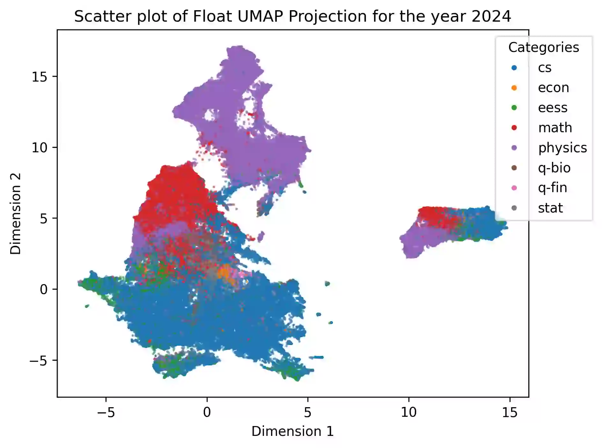

Did aliens try to divert the direction of arxiv?
2025-06-13
In the previous blog post, PaperMatch Analysis, we saw how when we analyse the embedding vectors from arXiv abstracts and use dimensionality reduction techniques, we can effectively map out how academia has evolved, at least in the eyes of arXiv. There was even a 3D map of arXiv to play around with and discover papers visually.
One interesting feature that was talked about was an “island” popping up. Technically, now we have 2 disjoint islands without a lone swimmer in sight. This was only seen in UMAP (& PCA) projections for the year 2024 and 2025, and never before!

However, I had presented PaperMatch at CASML 2024 in December. My analysis was cut-off at October 2024, where I shown a map of arXiv for the year 2024.

My part time friend Kshitij, and a full time physics lover, noted that this means that the new island has to have appeared in the months after. Digging into this hypothesis revealed something deeper. All the papers in the new island were from November 2024 to February 2024.
So we projected the first dimension from UMAP, which is supposed to carry the most information, to notice the trends.
Next is the second most (y)
and third most (z) 1D plots of the same.
Click on the images to go to an interactive version of it.
X-Axis has the value of ‘x’, the first dimension of UMAP. Y-Axis is
simply range(df.shape[0]). The thing to notice is, when you
move upwards you also happen to travel in time. The papers near the
x-axis are early november and their arXiv ID
increase linearly without fail. Now do you want to guess which patch is
the island?
Since we are going up in time, and we notice that the new island only occurs between November to February, it has to be the discountinous patch in between. The dates for the 4 distinct patches (leaving the start and end since that continue on) are:
As noticed, the gap muddles a bit as you go into higher dimensions but the distinct lines remain!
Kshitij’s leading theory was aliens controlling all of humanity to publish differently for a bit, then not, and then on and off again. But just before making this blog live, he changed it to arXiv changing something to the way they collect abstracts.
What are your thoughts on this?